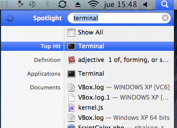
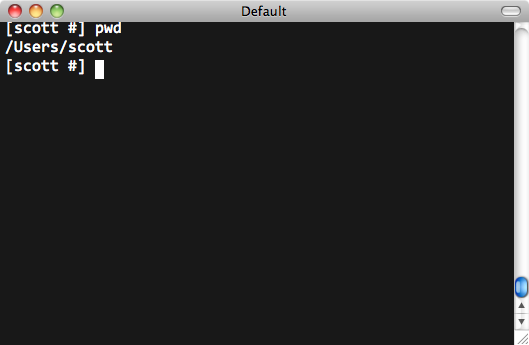
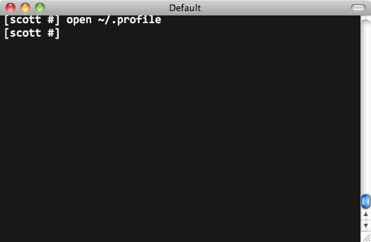
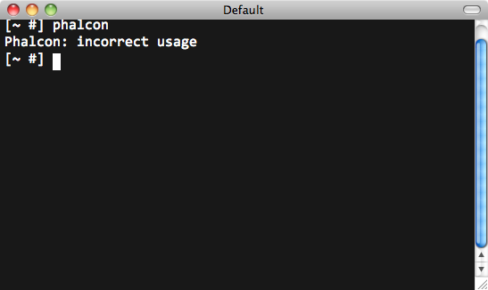

內容目录上一个主题< Windows 系统下使用 Phalcon 开发工具（Phalcon Developer Tools on Windows） 下一个主题Linux 系统下使用 Phalcon 开发工具（Phalcon Developer Tools on Linux） > 本页 |
Mac OS X 系统下使用 Phalcon 开发工具（Phalcon Developer Tools on Mac OS X）¶These steps will guide you through the process of installing Phalcon Developer Tools for OS/X. 预备知识（Prerequisites）¶The Phalcon PHP extension is required to run Phalcon Tools. If you haven’t installed it yet, please see the Installation section for instructions. 下载（Download）¶You can download a cross platform package containing the developer tools from the Download section. You can also clone it from Github. Open the terminal application:

Copy & Paste the commands below in your terminal: wget -q --no-check-certificate -O phalcon-tools.zip http://github.com/phalcon/phalcon-devtools/zipball/master
unzip -q phalcon-tools.zip
mv phalcon-phalcon-devtools-* phalcon-tools
Check where the phalcon-tools directory was installed using a pwd command in your terminal:

On the Mac platform, you need to configure your user PATH to include Phalcon tools. Edit your .profile and append the Phalcon tools path to the environment variable PATH:

Insert these two lines at the end of the file: export PATH=$PATH:/Users/scott/phalcon-tools
export PTOOLSPATH=/Users/scott/phalcon-tools
The .profile should look like this: Save your changes and close the editor. In the terminal window, type the following commands to create a symbolic link to the phalcon.php script: ln -s ~/phalcon-tools/phalcon.php ~/phalcon-tools/phalcon
chmod +x ~/phalcon-tools/phalcon
Type the command “phalcon” and you will see something like this:

Congratulations you now have Phalcon tools installed! |